OFFLINE USER GUIDE / BASIC + ADVANCED
Make a change.
Understand it. Test it.
A practical guide to the current editing tools: small first edits, advanced workflows, actual editing and appearance examples, a glossary and an alphabetical index.
NES / SNES / Genesis / Game Boy / Game Boy Color / GBA
Start with Basic Advanced workflows Glossary Index
Work on a project copy, review exact changes, create a separate build, playtest that build and verify its patch. Examples require the exact matched revisions and declared layouts shown. A measured check covers its recorded scope; it does not certify every game or scene.
Basic
- Install, open and choose a workspace PDF 5
- Set preferences and choose a theme PDF 6
- Start with a project PDF 8
- Identify the ROM and its exact revision PDF 9
- Save drafts, undo and create a build PDF 10
- Make a small balance change PDF 11
- Change text without overrunning it PDF 12
- Compare palette colors before building PDF 13
- Move a documented room object PDF 14
- Edit a Game Boy Color palette PDF 15
- Playtest, pause and save a state PDF 16
- Keep battery saves and states separate PDF 17
- Export a verified patch PDF 18
- Back up, restore and recover a project PDF 19
- Learn a little at a time PDF 20
- Load a mod and compare the changed bytes PDF 21
Advanced
- Inspect bytes with useful context PDF 23
- Trace a declared range to the exact bytes PDF 24
- Discover resources and declare a format PDF 26
- Paint an assembled sprite PDF 27
- Edit stored palette entries deliberately PDF 28
- Preview an explicitly assembled animation PDF 29
- Paint a declared tilemap PDF 30
- Rebalance named equipment and enemy stats PDF 31
- Translate through CSV or TSV PDF 33
- Declare text, fonts and layout limits PDF 34
- Edit declared terrain, objects and collision PDF 35
- Advanced practice: objects and room connections PDF 36
- Preview sound and respect driver limits PDF 38
- Extract and reinsert supported compression PDF 39
- Record routes and compare builds PDF 40
- Inspect memory and translate addresses PDF 41
- Reuse checked recipes and definitions PDF 42
- Use AI and MCP with explicit permissions PDF 43
- Use public knowledge without confusing it with proof PDF 44
- Browse real FFL2 maps and edit supported records PDF 46
- Find the cause before repeating a change PDF 48
- Use documented codes to find investigation leads PDF 49
- Inspect a shared engine without known game offsets PDF 51
- Understand an address before investigating it PDF 53
- Read automatic cartridge verification PDF 55
Glossary (PDF 57) | Alphabetical index (PDF 61) | Download PDF
BASIC
Basic workflows
Start the application, choose saved preferences, identify a source, make a focused edit, preserve progress and export a checked patch. These procedures build the habits used throughout the guide.
BASIC / Start here
Install, open and choose a workspace
The full Windows x64 release includes Python, Pillow and credited emulator engines. The source edition uses your own Python installation. Both include this guide.
Do this
- Run the Windows setup executable. Choose the install location, finish setup, then open ROMancer. The application and its saved workspace are separate.
- For the portable Windows ZIP, extract the entire archive and use Open ROMancer.cmd. Keep app, python, cores and the root launch files together.
- For the source edition, install Python 3.13 or later and the pinned requirements, then use Launch ROMancer.cmd on Windows or the supplied run.sh launcher. Read the root README for the command-line and MCP entry points.
- Open Help for tutorials and this guide. Start a workshop or import a ROM you supply. No AI account, subscription or API key is required.
Keep in mind. Keep the complete folder when moving a portable copy. Moving the program does not by itself move the workspace or its projects.
Update and recovery
Install a new build revision rather than replacing files inside an old verified version. Rollback changes the active application version while preserving projects; an older application may not understand newer project features.
Offline guide
Open user-guide/index.html directly from the source folder, or app/user-guide/index.html in the Windows payload. The adjacent guide.pdf is the printable edition. Keep the screenshots folder beside the HTML.
BASIC / Settings / saved across launches
Set preferences and choose a theme
Settings control the working environment: appearance, startup behavior, automatic analysis and audio defaults. Apply the choices you want to keep before closing the application.
Do this
- Open Settings. Review appearance and startup preferences. 100% is the standard interface size; it uses the more compact layout previously shown at 75%. Choose another offered size when useful.
- Choose a theme: ROMancer (default), Dark for neutral graphite or Light for white surfaces. Adjust Reduce interface motion and Show advanced tools in navigation to suit your work.
- Review Auto deep scan on ROM load, enabled by default, and Inspect gameplay graphics automatically. Set Remember my workspace to reopen the last project, ROM, page and editing position. These preferences choose automatic work, not a new level of game-format verification.
- Set Volume from 0 to 100, Start game audio muted and Loop audio previews. Choose Apply to save and continue, or OK to save and close. Cancel discards unapplied changes. Restore defaults prepares the standard choices; use Apply or OK to keep that reset.
Keep in mind. A theme changes appearance, not ROM bytes. Disabling automatic analysis does not invalidate an existing definition; it changes when that analysis runs. Manual investigation and review remain available.

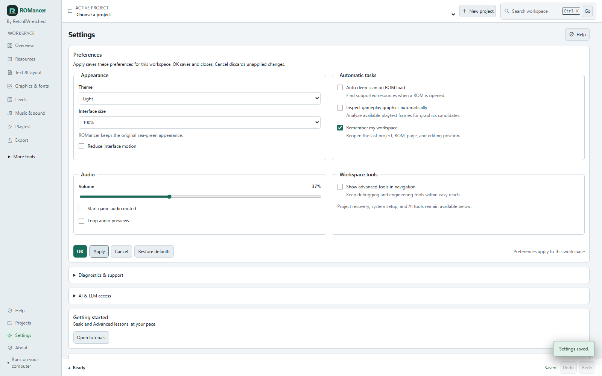

When to change automatic work
Leave Auto deep scan on ROM load enabled for normal discovery. Turn it off when you want to choose the timing of a manual scan. Automatic analysis of paused gameplay graphics depends on an actual loaded session and exposed data; it does not identify arbitrary resource ownership.
Audio and motion
Volume and start-muted preferences control playback defaults; use the current preview controls when listening. Preview looping repeats the available preview, not the game sequence. Reduced motion makes interface motion less distracting.
Apply, Cancel and defaults
Apply saves the currently selected preferences without closing Settings. Cancel does not roll back an earlier Apply. Restore defaults prepares the standard choices for review; use Apply or OK to keep them.
BASIC / YOUR FIRST FIVE MINUTES
Start with a project
A project keeps one piece of work together: imported sources, definitions, drafts, builds and measured checks. Begin with a small, reversible edit.
Do this
- Click New project. Give this piece of work a useful name, then import your ROM into that project.
- Check the selected source at the top. On Overview, read the revision match and investigation results before choosing an editor.
- Make one small edit, review it, create a separate build, then playtest that build. Export its patch after checking the result.
Keep in mind. The Windows x64 distribution includes its runtime and emulator engines. Supply your own ROMs. GB and GBC use separate system modes.
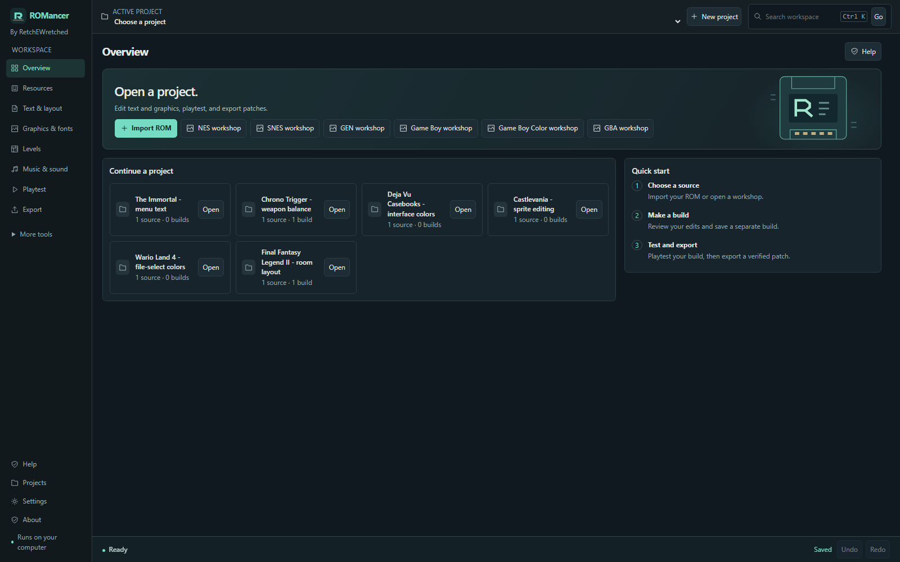
BASIC / Hashes, scope and evidence
Identify the ROM and its exact revision
A system header, an exact hash match and a successful playtest answer different questions. Read each result before selecting a named game edit.
Do this
- Select the imported source and open Resources. Read ROM health & revision and the investigation summary. A filename is a hint, not a verified identity.
- For a known reference, use Identify ROM revision. Import your offline CSV, TSV, JSON or XML DAT catalog and select whole-file or supported cartridge-payload scope.
- Compare CRC32, SHA-1 or SHA-256 with an expected value for that same scope. Check the region, revision and any copier/header prefix. A mismatch is against the selected reference.
- Use Check project on Overview for missing files, stale definitions, overlaps and declared pointer/allocation problems. Recheck after repairing the reported location.
Keep in mind. A valid console checksum does not prove every game-specific check passes. Hashes do not prove that an edit is fun, balanced or safe in every scene.
Three separate checks
Identity: compare measured bytes with an expected revision. Structure: validate supported headers, declared sizes and integrity fields. Behavior: playtest and replay explicit assertions. Keep these conclusions separate.
Headers and byte scope
A SNES copier prefix or an NES trainer/header can change file positions and whole-file hashes. Compare a payload reference only with the matching supported payload scope. Never force a named definition onto a close-looking revision.
BASIC / The editing cycle
Save drafts, undo and create a build
Editing changes the proposal shown in the editor. A build is a separate playable output created from a reviewed plan.
Do this
- Watch the Saving or Saved status as you work. Ctrl+S requests draft saving. A saved draft still needs review and a build.
- Use the active editor's Undo and Redo controls. Pixel and room editors group a stroke; text fields retain ordinary text editing undo. The shortcut help explains the current context.
- Choose Review changes or the tool's equivalent. Read expected original bytes, proposed values, shared consumers and any integrity updates. Changing an input invalidates an older review.
- Create the separate build, select it in the top bar and reload it in Playtest. Compare the intended change and one nearby unchanged behavior.
Keep in mind. If saving fails, keep the window open and copy unsaved text before reloading. Undoing staged work does not erase a previously created build.
Draft versus plan
Drafts hold editor values and staged changes. A plan binds exact changes and preconditions to a source identity. Re-review when the source, definition or staged values change.
Returning to earlier work
Use Overview > Build history to inspect versions and meaningful names. Select an earlier output when comparing behavior. Make a complete private project backup before moving work or changing a complex definition.
BASIC / SNES / CHRONO TRIGGER
Make a small balance change
Use a named, revision-matched edit for a focused first balance change. Compare the stored value with the actual in-game result.
Do this
- On Overview, look for Game edits and Revision matched. These named edits require the exact verified original.
- Change Wood Sword power from 3 to 30. Read the original/edited comparison and click Review changes.
- Expand Byte changes and console checksum if you want the exact edit list. Choose Create build, then test the weapon in game.
Keep in mind. Stored power is not the final damage or displayed attack. Game formulas can change that result. A revision match verifies the source, not every possible gameplay effect.
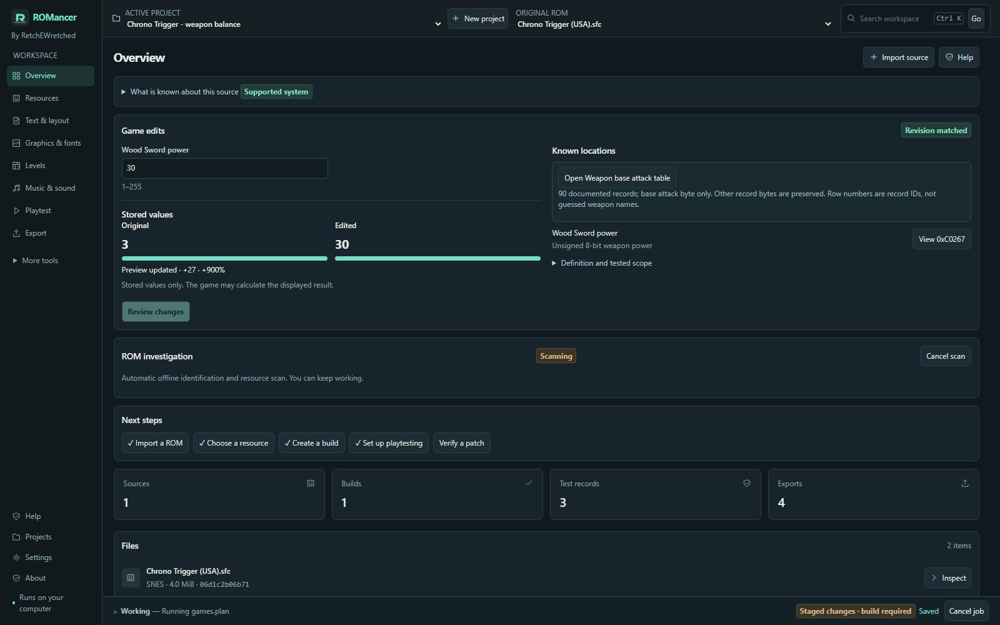
BASIC / GENESIS / THE IMMORTAL
Change text without overrunning it
Change a short, documented string while keeping its storage and required controls intact. Test its appearance with the real game font.
Do this
- On the matched source, edit New-game menu text. This example changes "New game?" to "New hack?".
- Read the text comparison and length limit. Click Review changes and inspect every additional change listed in the plan.
- Create the build and playtest the actual menu. Use Text & layout for declared script records and translation imports.
Keep in mind. The preview uses the system font. The real game font and window still need playtesting. This named definition preserves its protected terminator; do not copy its offsets to another revision.

BASIC / GBA / WARIO LAND 4
Compare palette colors before building
Compare decoded original colors and proposed colors before writing a build. This example is tied to an exact file-select palette definition.
Do this
- Open the matched source and change File-select colors to Teal and magenta.
- Compare Original and Edited swatches. Expand the second file-select palette to inspect that set too.
- Review the change, create a build and open the file-select scene in Playtest to check the appearance.
Keep in mind. These swatches decode stored RGB555 colors. They are not a screenshot of the game scene. Palette changes can affect every object using those entries.
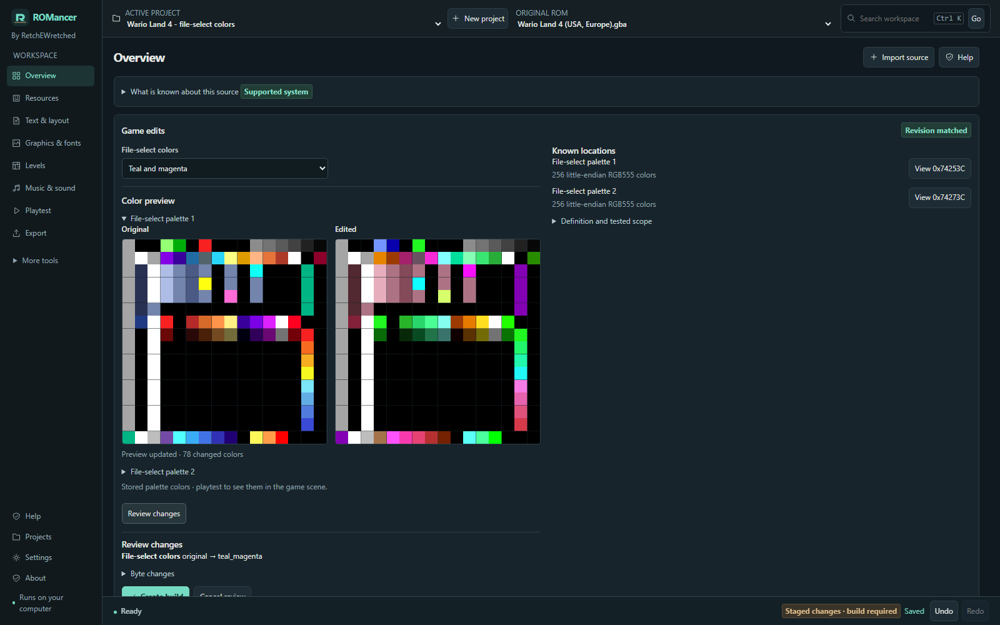
BASIC / GAME BOY / FINAL FANTASY LEGEND II
Move a documented room object
This is an actual ROM-decoded bedroom on a matched commercial-game revision. Change only the documented stool command, then check its appearance and surrounding movement in native Playtest.
Do this
- On the matched source, open Opening-bedroom stool on Overview or open its matched room in Levels. Compare the actual ROM-decoded original and edited terrain.
- In Layers, toggle Terrain, Objects, Collision values, Tile grid and Allowed floor tiles. Keep Objects visible to edit the stool.
- Drag the stool onto a highlighted floor tile, click an allowed tile or use arrow keys while the map has focus. The stool-position dropdown is an alternative. The status reminds you to create a build to keep the previewed change.
- Review the source-bound command, create a separate build and visit the bedroom. Check the stool, surrounding movement and protected doorway in Playtest.
Keep in mind. The doorway at (13, 33) and other room commands are protected. Preview details contains technical bounds and raw collision information. Actors and dialogue are excluded from this terrain preview. Hiding Objects prevents stool edits.
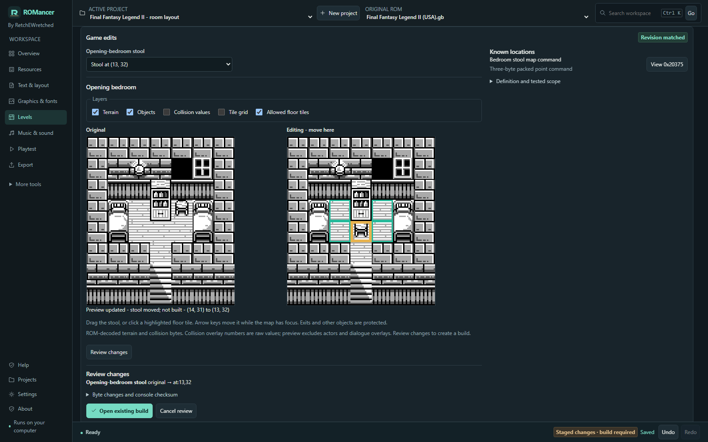
BASIC / GAME BOY COLOR / DEJA VU CASEBOOKS
Edit a Game Boy Color palette
Use the Color system mode for a GBC source, then test both the startup interface and the first scene covered by this definition.
Do this
- Select the matched .gbc source. Choose Parchment colors under Opening casebook interface.
- Compare the startup interface swatches. Expand Opening scene interface colors to inspect the second palette.
- Review and build, then playtest with the Game Boy Color system selected. Check the opening casebook and first scene.
Keep in mind. This definition covers the startup interface and first Case Book 1 scene. Later rooms may use separate palettes. GBC mode matters even though GB and GBC share an engine.

BASIC / TEST THE SELECTED BUILD
Playtest, pause and save a state
Load the exact source or build you intend to test. Playback, controller input, frame stepping and snapshots operate on that loaded session.
Do this
- Check that the top selector shows your build, then open Playtest and click Load game.
- Choose Play and focus the game for controller input. Use Pause before inspecting a frame. Controller & frame tools exposes manual stepping and input devices.
- Choose Save state. Select a saved state and click Load state to return to it. Ordinary battery saves are managed separately below.
Keep in mind. Save states are bound to the exact ROM, engine and runtime setup. Do not assume a state from the original will load on a modified build. Loading refreshes one paused frame.
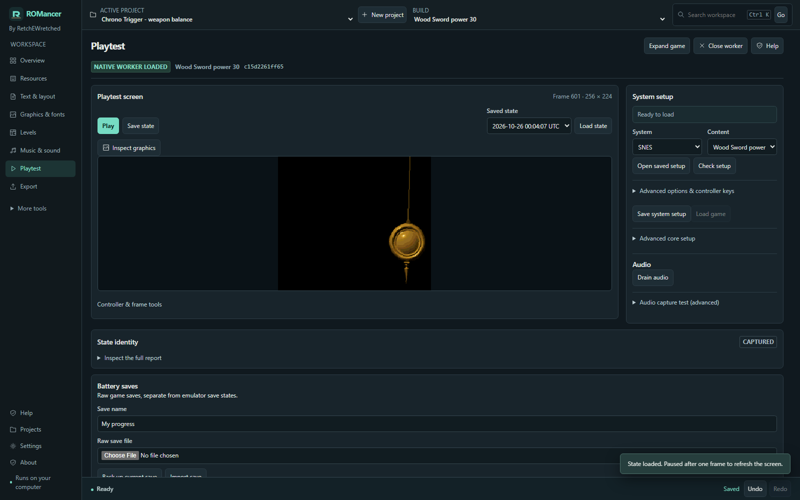
BASIC / Protect progress
Keep battery saves and states separate
A battery save is persistent game data such as raw .sav or .srm RAM. A save state captures an emulator session and has much tighter compatibility requirements.
Do this
- For a snapshot, use Save state beside Play. Select the timestamped state for the same ROM, core and setup, then use Load state. Loading refreshes one paused frame.
- For ordinary progress, load the exact game and open Battery saves. Back up the currently exposed save RAM before importing or restarting.
- Import raw save data only at the exact supported size. Keep a downloaded backup. Use the game's own load/save menu to confirm progress after a restart.
- Use Restart with selected save only after reviewing the chosen file and automatic backup. Keep separate progress for experiments until the edited build is validated.
Keep in mind. A state from an original can be incompatible with a modified build. Wrapped emulator saves are not automatically raw RAM; use the originating emulator's export tools.
Binding matters
States depend on exact ROM bytes, engine build, options and system-file setup. Do not treat a matching game title as compatibility. Battery files can also depend on the game revision and save layout.
Size or initialization mismatch
Some games expose a different save size after initialization. A refusal preserves the backup; do not pad, truncate or bypass exact-size checks without a separately understood format.
BASIC / SHARE YOUR CHANGES
Export a verified patch
Share the verified difference between an exact original and a completed build. State the required source revision with your instructions.
Do this
- Open Export. Select the exact Original revision and the intended Target build. Add a useful title and notes.
- Click Create & independently verify patch. ROMancer reconstructs the target with a separate BPS decoder and checks its identity.
- Download the prepared patch. Include the expected original revision and instructions with your release, then test applying that patch to a fresh source copy.
Keep in mind. A patch is not a full ROM. BPS checks compatibility using embedded checksums; IPS needs an external source reference. A verified patch proves reconstruction, not complete gameplay correctness. To apply a downloaded patch, use Export > Apply a downloaded patch on the exact original. BPS carries checksums; IPS requires the author's full-file CRC32 or SHA-256 reference. Preview compatibility before creating its separate build.
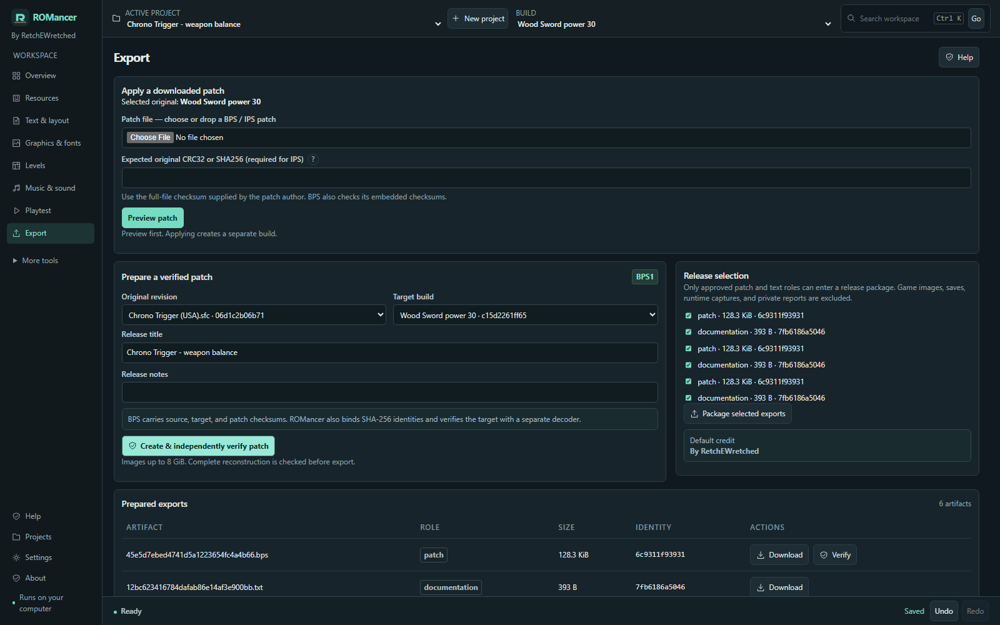
BASIC / Projects, Trash and private backups
Back up, restore and recover a project
A project backup is for your own recovery or migration. A public patch package has a different purpose and contains a different selection of data.
Do this
- Open Projects to choose the right project before editing. Use a separate project for unrelated games or experiments you want to manage independently.
- In Settings, make a complete private project backup before moving a workspace or making broad changes. Store the archive outside the working project and confirm it was created.
- Restore into the destination workspace, open the recovered project and run Check project. Inspect sources, builds, definitions, drafts and prepared exports.
- To remove an unwanted project from the active list, choose Delete project, then Move to Trash. Recover it through Projects > Trash > Restore.
Keep in mind. A private backup can contain your ROMs, saves and personal work. Review what you share. Recovery does not make historical reports into fresh native evidence.
Before cleanup
Check the project name and current workspace. Keep an independent backup before deleting old application folders or moving manually managed data. A reversible application rollback is not a project backup.
After restore
Run fresh native checks before using restored captures or reports as current proof. If a lock blocks recovery, establish that the previous owner process is no longer running; never break an active writer's lock.
BASIC / HELP / BASIC AND ADVANCED
Learn a little at a time
Learn one tool at a time, or jump to an exact term. Tutorials, keyboard shortcuts, this glossary and the index remain available offline.
Do this
- Open Help > Tutorials whenever you want a guided lesson. The first-launch invitation is optional and includes Never ask again.
- Choose a short Basic or Advanced lesson. Completed lessons receive a green check; skipped lessons do not.
- Use Help > Keyboard shortcuts for the popup. Ctrl+S saves drafts; contextual Undo/Redo acts on the active editor. Text fields retain normal text undo.
Keep in mind. Saved drafts are not playable builds. Before leaving an edit session, review the Saved or Saving status and whether staged changes still require a build.

BASIC / ORIGINAL / MODIFIED FILES
Load a mod and compare the changed bytes
Compare two files in the same project. A patch can create a separate modified build, while a supplied modded ROM can be imported as another source.
Do this
- Import your original ROM into a project. For a modded ROM file, use Import source in that same project. For BPS/IPS, select the original and open Export > Apply a downloaded patch. IPS requires the author’s original CRC32 or SHA-256 reference.
- Choose Preview patch, inspect the changed-byte count and source identity, then Create patched build. The original remains unchanged. A successful BPS reconstruction does not establish each changed byte’s gameplay meaning.
- Open Overview > Build history > Compare files. Choose the original/earlier file and the modified/later file, then click Compare files. Read the full changed-byte count and select a listed changed range.
- In Resources, compare Earlier bytes and Selected bytes. Highlights mark differences. A dash means that file has no byte at that offset. Use the comparison page controls for added/removed regions, or Follow hex editor to use its current position.
Keep in mind. A shifted or recompressed resource can change many bytes without creating many separate gameplay changes. The range list can be truncated; its changed-byte total still covers the complete comparison. File-relative differences do not prove that offsets mean the same thing after relocation.
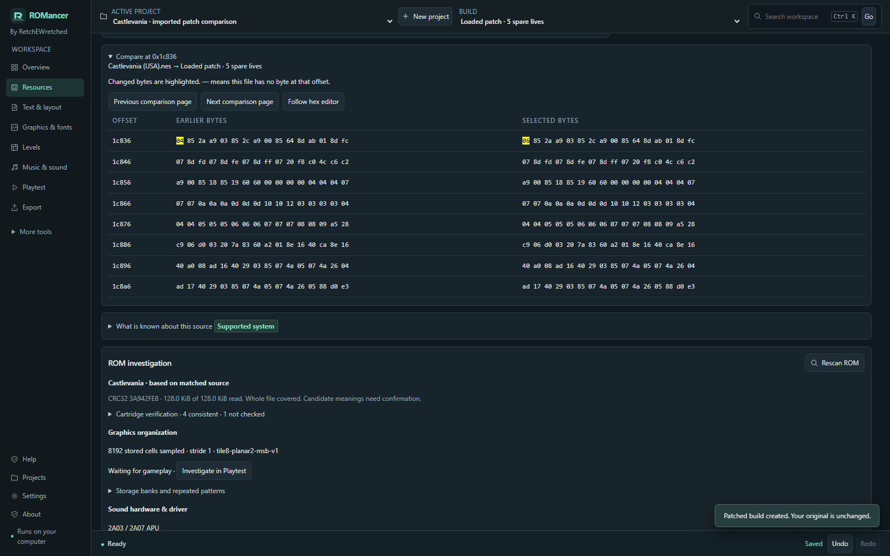
ADVANCED
Advanced workflows
Use explicit definitions for graphics, text, tables, connected-room layouts, audio and bounded automation. Follow declared ranges to exact bytes, and keep editor metadata, native observations and unknown game semantics separate.
ADVANCED / RESOURCES / HEX EDITOR
Inspect bytes with useful context
Inspect exact stored bytes with a known purpose and an explicit address scope. Use higher-level tools when their definitions describe the change.
Do this
- Use a Known locations > View 0x... button to jump to a documented offset, or open Resources and enter an offset.
- Search bytes such as AB ?? CD, UTF-8 text or an integer with explicit byte order. Inspect signed/unsigned numbers, read nearby verified notes and bookmark the selected offset before editing.
- Edit a byte using two hex digits. Choose Review byte edits, inspect the plan, then Create separate build.
Keep in mind. Hexadecimal is a way to write numbers; it does not tell you what a byte means. Unknown data stays unknown until evidence establishes its structure and purpose.

ADVANCED / Resources / catalog, relationships and explanations
Trace a declared range to the exact bytes
Follow a named room, object field, table or sound range into the selected source. Explanations describe established encodings and declared relationships, while unknown byte purposes remain unknown.
Do this
- In Resources, open Declared resource catalog, choose Index declared resources and search a name. Checked definitions can expose rooms, object slots, table ranges, samples and songs. Use Inspect on the intended range.
- Select a byte in the hex editor. Open Number inspector & bookmarks, then Explain selected bytes. Read its source-bound name, offset, stored bytes, numeric value, byte order and declared bounds when available.
- For room data, compare the cell X/Y or object slot and field. For a mapped exit field, read the declared destination. Use Declared resource relationships to follow named source ranges; these relationships do not establish arbitrary code references.
- In Troubleshooting, use Find declared references or Resolve address, then Inspect mapped bytes. Confirm the current source, mapping and bank. Recompute after switching sources; do not reuse a stale result.

Read the stored value
This capture selects 0x3515 and explains the Hillside / Courtyard connection / x field as an 8-bit declared value of 12, bounded from 0 to 15. The separate byte-reference panel correctly does not claim verified game semantics.
Drafts and source bytes differ
An inspector can show a staged X position of 13 while the selected original source still stores 12. Create and select the separate build before expecting a byte explanation to describe that built edit.
Keep navigation current
Go selects the visible byte cursor. After moving or switching sources, request the explanation again. A previous number interpretation or reference result does not describe a newly selected byte automatically.
What a declaration can explain
A terrain/collision cell can identify its room and coordinates; an object field can identify the named slot, value and declared target. Metatile parts, table fields, samples and supported song events retain their own range and format context.
Use the matching kind of tool
A source editor changes checked stored data. A game-authoring engine needs its own executable runtime and event system. Instruction breakpoints require a real CPU-debugging adapter. The current investigation tools provide byte comparisons and bounded observations, not a full instruction debugger.
Protect the selected context
Reference jumps, mapped-address inspection and memory watches belong to a source/runtime context. Re-selecting a file, build or session requires a fresh compatible observation. A changed RAM value alone does not identify a ROM address or the instruction that wrote it.
ADVANCED / Known, declared and candidate
Discover resources and declare a format
Offline investigation can identify known revisions and suggest possible structures. A candidate is a lead to inspect, not permission to edit arbitrary bytes.
Do this
- Read the automatic investigation after import. Keep exact known identities separate from candidate text, graphics, pointer or compression matches.
- Use Rescan ROM for changed data or Find resources for a focused byte range. Read any partial-range report and continue the next range when needed.
- Confirm the offset, format, dimensions, allocation and source identity before declaring a resource. Inspect surrounding bytes and independent references for the exact revision.
- Save the checked definition. Reopen it on the same source and compare the preview with a measured game scene before applying edits.
Keep in mind. A plausible picture or readable word can occur inside code or unrelated data. Automatic discovery cannot establish arbitrary enemy names, animation scripts or sound-driver commands.
System formats
NES stored CHR uses planar 2bpp; Game Boy uses paired row bitplanes. SNES templates support paired 4bpp; Genesis supports packed 4bpp and big-endian palette words. GBA templates include low-nibble-first 4bpp and RGB555. Each game can add compression and its own layout.
Six supported modes
NES, SNES, Genesis, GB, GBC and GBA are separate user choices. Bank switching, enhancement hardware and game-specific data need their own supported mapping or verified definition. Unknown bytes remain inspectable, with editing or execution refused when support is not established. The declared catalog also exposes checked level and sound ranges; it does not discover arbitrary room identities or music-driver commands.
Automatic versus manual investigation
Settings enables Auto deep scan on ROM load by default. You can choose a manual scan instead. Automatic paused-gameplay graphics analysis examines available observed data; its candidates still need format and ownership confirmation.
ADVANCED / NES / CASTLEVANIA
Paint an assembled sprite
An explicit assembly places known tiles into a useful sprite view. Painting edits the referenced tiles; the arrangement itself does not discover game logic.
Do this
- Open Graphics & fonts. With verified or declared tiles loaded, use Sprite assembly to arrange the parts.
- Choose a brush color index and paint in Editing - paint here. Compare the fixed Original image with the edited preview.
- Use Undo sprite stroke or Redo sprite stroke, then Review asset changes and create a build.
Keep in mind. This example uses a declared tile layout and observed gameplay colors. It does not prove automatic sprite assembly for every game. Preview colors do not change palette bytes.
ADVANCED / Color indices and shared uses
Edit stored palette entries deliberately
A pixel usually stores a color index. A palette supplies the RGB color for that index. Changing the palette can recolor many uses at once.
Do this
- Load a declared graphics resource and inspect Palette colors. Select the bank and entry before editing. Confirm the original swatch matches the intended resource.
- Use Choose color for an RGB proposal, or Color storage values for the declared channels. Read the Original/Edited comparison as the change is staged.
- Review the channel limits and shared consumers. RGB555 stores 5-bit channels, so a chosen screen color is quantized to a representable value.
- Review asset changes, create the build and inspect every scene known to share that palette. Verify the color in the actual game, not just the swatch.
Keep in mind. Preview colors used to arrange a sprite are not necessarily stored palette edits. Transparency, banks and a game's dynamic palette changes can affect the observed result.
Shared entries
One index can be referenced by multiple tiles, objects or frames. A correct local swatch can cause an unintended global recolor. Inspect declared consumers and compare an unchanged neighboring object.
Original versus edited
The original view remains the reference while the edited view follows staged values. Saving the editor draft does not modify the playable source. Build and reload before judging the in-game effect.
ADVANCED / Frames and shared tiles
Preview an explicitly assembled animation
Animation frames let you compare declared arrangements over time. They do not automatically identify or rewrite a commercial game's animation script.
Do this
- Arrange the tiles for one frame in Sprite assembly. Open Animation frames, set Frame duration (ms) and choose Add assembled frame.
- Create the other explicit frame arrangements. Select a frame to inspect it, use Edit selected frame to revise its layout, or Remove selected frame to remove it from this preview.
- Use Play animation and Pause animation to review the proposed sequence. Read the shared-tile count before changing pixels.
- Review the actual asset changes and build them. Playtest the real game animation to establish whether its own script uses the edited tiles in the intended order.
Keep in mind. Editing a tile reused across frames changes every preview frame that references it. A timing value in this preview is not proof of the game's stored animation timing.
What is saved
The frame list is an explicit editor layout. Only supported reviewed asset changes become ROM bytes. Keep resource definitions and game-specific script evidence separate.
Useful first check
Make a one-pixel change in one tile, find every frame that shares it, then undo. This reveals the practical reach of a tile before you commit a larger redraw.
ADVANCED / Tile references, banks and flips
Paint a declared tilemap
A tilemap is a grid of references to tiles. Entries can also contain palette banks or horizontal and vertical flip flags, depending on the declared format.
Do this
- Inspect a graphics definition that includes the tilemap location, dimensions, entry format and associated tile/palette resources. Confirm the original map preview.
- Select the map brush or entry and stage the intended tile index, palette bank and flip values. Compare the map preview while keeping the original as the reference.
- Use the tilemap editor's supported painting tools and undo controls for bounded strokes. For a specific entry, inspect its stored values before staging a change.
- Review asset changes and shared consumers. Create a build and load the game location that uses the map, including scrolling or transitions that might load other banks.
Keep in mind. A tilemap is a display arrangement. Collision, objects and exits can live in separate records and will not automatically follow a visual change.
PNG import
For supported graphics imports, choose exact palette mapping or explicitly review nearest-color conversion. Importing artwork does not establish the ROM's resource location or capacity.
Reuse matters
A tile edit changes every map entry that reuses that tile. A map-entry edit changes its reference instead. Pick the operation that matches the intended scope.
ADVANCED / ADVANCED / DOCUMENTED RECORDS
Rebalance named equipment and enemy stats
The exact USA Chrono Trigger profile supplies named equipment and enemy tables. Names are decoded from your selected ROM, with record IDs kept beside duplicates and blank slots.
Do this
- In Overview > Game edits, open the desired attack, armor, helm, base-price or enemy-stat table. The original attack-only resource ID remains compatible with older definitions.
- Search by name or ID, choose the record, and select Show selected record. Edit only the exposed numeric fields. The Original/Edited preview updates as you type.
- Keep critical rates within 0 to 100. HP and prices use the declared integer widths; batch changes refuse numeric overflow and field-limit violations. Blank or unused slots are not promises of gameplay content.
- Choose Review changes, inspect the exact records, then Create build. Playtest the new build. Stored attack, defense and prices can be transformed by game formulas or battle scripts.
Keep in mind. The current definitions cover 85 weapon slots (74 named), 32 named armor slots, 24 named helms and 251 enemy slots (212 named). Effects, flags, rewards and scripts are preserved. These counts describe the exact original, not every external hack. For other games, table layouts still require a verified definition.

ADVANCED / Stable IDs and byte capacity
Translate through CSV or TSV
The translation spreadsheet preserves the source text and stable record identity. Edit the translation column while keeping the exported structure intact.
Do this
- Inspect editable text in Text & layout. Open Translation spreadsheet and download CSV or TSV for the selected source and definition.
- Keep every stable ID, original-text field and control column. Edit only translation. Preserve delimiters, quoted multiline fields and the same file format when saving.
- Import the sheet back into the same source context. Review unmapped characters, protected controls and encoded byte capacity for each changed record.
- Preview the translation plan, create a separate build and test menus, dialogue, line breaks and transitions using the actual font and game logic.
Keep in mind. Character count and encoded byte count can differ. A spreadsheet that silently reformats IDs or line breaks can invalidate the import. Shorten text or correct an established allocation rather than bypassing limits.
A useful first round-trip
Export a sheet, change one short line and reimport it before translating hundreds of rows. Keep the original export as a reference and a project backup outside the workspace.
Text preview limits
A system-font comparison helps review wording. It does not establish glyph availability, game-window width or dialogue behavior. Use declared font/layout measurements and native playtesting for those checks.
ADVANCED / Encoding, pointers and controls
Declare text, fonts and layout limits
Text bytes need an encoding and storage layout. Font and window measurements add useful checks when those formats are explicitly declared.
Do this
- Declare the text offset, slot capacity, encoding and terminator, or load a verified definition for the exact source. Add pointer information only when its location and mapping are established.
- Inspect records and visible control tokens. Edit wording while preserving required controls and segment boundaries. Read capacity and unmapped-character feedback.
- For declared fonts and menu/dialogue layouts, inspect the actual decoded-font canvas, glyph metrics and available dimensions. Treat a measured overflow as a concrete issue in that declared layout.
- Review the exact plan, including pointer or integrity changes, build and test the actual screen. Inspect the following record or menu item for unintended damage.
Keep in mind. An offset is not a CPU address. A linear pointer base does not establish a bank-switched mapping. A fixed slot cannot grow just because more words fit in the editor.
Control codes
Commands can change colors, insert names, wait for input or end a record. Preserve their declared structure even when they look like punctuation or empty bytes.
Fonts and graphics
Glyph painting uses declared graphics storage. Changing a glyph can affect every string that uses it. A layout measurement covers its supplied font and dimensions, not every screen in the game.
ADVANCED / Levels and bounded game definitions
Edit declared terrain, objects and collision
Levels needs a checked game-specific definition. The matched FFL II bedroom is a bounded real-game example. An unsupported source has no level definition; optional Advanced practice teaches the declared format without pretending to decode that game.
Do this
- Open Levels for the selected source. If it says No supported level map for this ROM yet, investigate the source or supply a checked map definition through Advanced level setup. The separate collapsed Advanced practice > Open test layout is a learning exercise, not your game.
- Choose Room and Paint layer: Terrain or declared Collision values. Select a Terrain brushes thumbnail, or use Pick from room to sample a cell. Compare Original room with the editing canvas; paint, fill or select/copy/paste within the declared grid.
- Use Undo stroke and Redo stroke. With Named objects and Move object, select or drag a named label. Use Objects > Update preview for a declared destination. Raw coordinates and fields stay inside Position & advanced values; unnamed slots require All records (Advanced).
- Choose Review level changes, inspect the exact changes, then Create level build. Visit the room and test walking, collision, boundaries and transitions.
Keep in mind. Visual terrain does not establish collision semantics. Collision values are raw stored data. Only declared names appear by default; raw slot kinds and records stay Advanced. Named roles do not establish native actors or doors, and the practice layout is not an executable game-authoring workflow.
Shared metatiles
A block can be used in many cells or rooms. Changing its component tile changes every declared use; changing one terrain cell selects a different block for that cell.
Optional practice is not your game
The artificial Hillside/Courtyard layouts demonstrate checked storage and declared relationships. Only Hillside graphics and music are rendered by the native test program. Their other room, objects and connections are editor practice data, not implemented doors or events. Actual game-room editing requires a verified definition for that game and revision.
ADVANCED / Optional practice / synthetic editor-layout data
Advanced practice: objects and room connections
This optional Advanced practice uses original synthetic test terrain and declared records to demonstrate the editor format. It is not a decoded commercial-game level. For an actual supported game-room edit, start with the matched Final Fantasy Legend II bedroom example.
Do this
- Open Advanced practice > Open test layout only to learn the declared format. Read the Practice layout warning. Under Choose a room, choose Hillside or Courtyard: these are synthetic test layouts, not decoded commercial levels.
- Keep Named objects selected in Overlay. Select a named map label or use Selected object under Objects. Choose Move object and drag its label within the guarded room bounds.
- For a declared exit, select Destination room and choose Update preview. Exact X/Y and raw fields are inside Position & advanced values. Unnamed raw slots appear only with All records (Advanced).
- Inspect the staged room link, follow its destination button and use Undo stroke to undo a grouped edit. Review and build only the intended stored changes; the workshop's room links and records still do not run as gameplay.
Keep in mind. This is editor-format practice, not normal beginner game editing. The native test program renders Hillside and plays music only. Courtyard, object records and declared connections are not executed as actors, doors or events. Use the real FFL II bedroom example for a native-supported room edit.

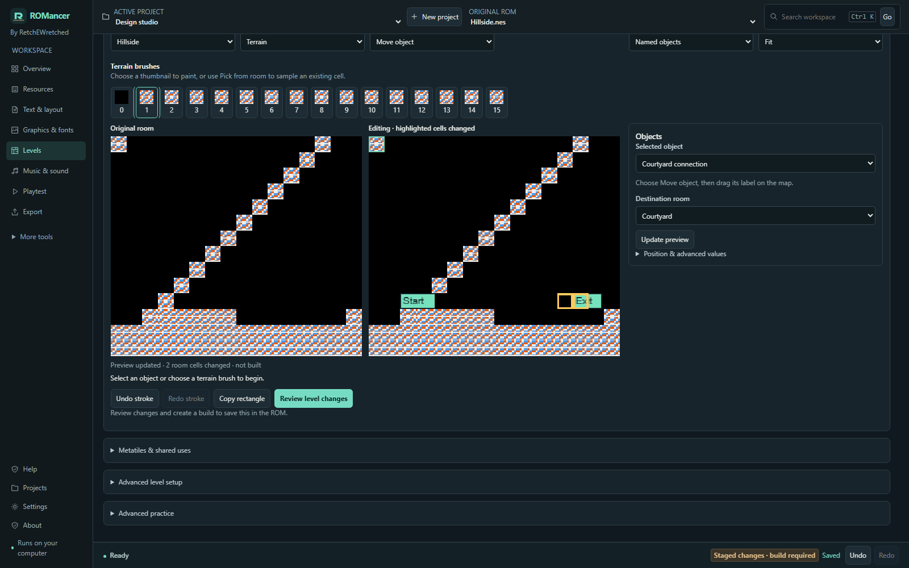
What a connection declares
An optional per-slot annotation supplies its index, name and role. A declared exit names a stored integer field and lists allowed value/room-ID pairs. Unmapped current values, duplicate destination values, unknown rooms and out-of-range edits are rejected.
Existing definitions still work
The optional object metadata does not replace the fixed-record storage layout or require a new schema version. Older definitions remain usable; unnamed slots stay unnamed, and objects without established X/Y coordinates are not given invented positions.
Workshop versus game engine
Hillside and Courtyard demonstrate source-bound layouts, named fields and declared navigation in the editor. These data do not provide a game-authoring engine, executable door events or an event compiler. Verify a real game's consumers before claiming an edited destination works in native play.
ADVANCED / Music & sound
Preview sound and respect driver limits
Console audio hardware and a game's music driver are different layers. Native audio recording can work even when sequence editing is unavailable.
Do this
- Open Music & sound. Read the hardware information and Music driver status. Unknown driver means sequence editing is unavailable.
- For actual game output, load the source in Playtest, reach the sound, then use Record native preview. Play, pause, seek or loop the resulting preview and save a WAV when useful.
- For a supported sample, use a verified offset, allocation, codec and preview sample rate. Choose Check declared sample, then preview gain, reverse, silence or supported WAV replacement before staging. Staged edits update Original and Edited PCM waveform previews; use their play controls when ready. Audio does not autoplay.
- Review sound changes, create a sound build and test the real scene. Use note/event or transpose operations only when a supported sequence definition is identified.
Keep in mind. A valid codec does not locate a sample or determine its rate, loop or instrument. Lossy re-encoding can change sound quality. A synthesized sequence preview does not certify the native driver result. Supported sequence editing is available in the workshop definition; that does not establish a commercial game driver.
Two preview paths
Native recording captures the engine's mixed output for the selected game session. A declared sample preview decodes a bounded stored resource. They answer different questions and can sound different.
When music cannot be edited
Keep unknown driver data unchanged. Use native recording, document the observed scene and find evidence for the exact driver and revision. Do not invent note commands from a console hardware label.
ADVANCED / Allocations and independent decoding
Extract and reinsert supported compression
A decoded resource is not automatically safe to write back at a new size. Recompression must fit an established parent allocation.
Do this
- Select a validated supported LZ10 or RLE stream in Resources. Confirm its codec, file offset and allocated capacity using evidence for this revision.
- Extract the decoded resource into the project. Inspect and edit it through the normal supported editors, then create the edited decoded build.
- Select that edited decoded build and review recompression into its original parent. Read the proposed compressed length and confirmed capacity.
- Create the parent build only when the stream fits. Inspect the independently decoded comparison, then playtest the actual game resource.
Keep in mind. Unrecognized compression remains read-only. A run of zeroes or another fill pattern does not establish unowned capacity. Do not increase an allocation or move a stream to clear an error without a separately supported ownership and pointer model.
Parent and child
Extraction creates a resource with an explicit relationship to its parent bytes. Editing a child does not automatically modify the game. Reinsert the selected child build and test the resulting parent ROM.
Capacity and relocation limits
Automatic relocation is unavailable. None of the six bundled game profiles establishes complete pointer obligations and destination ownership for a relocation. A safe relocation would need all affected references, their encoding and representable range, exact original bytes, a proven owned destination and overlap checks. Repeated fill bytes do not prove free space.
ADVANCED / Measured assertions
Record routes and compare builds
A regression route repeats explicit inputs and checks an expected observation. Define what should remain unchanged and what is intentionally different.
Do this
- Open Routes and start recording controller inputs. Reach the screen in Playtest, pause and capture a measured frame for the selected build.
- In Screenshot checkpoints, select a stable region up to 256 x 256 pixels. Add the checkpoint to the latest recorded input, then stop and save the recording.
- Replay the recorded checkpoint. For original/build comparison, save a cold-start definition, open Regression, select the original, build and up to eight routes, then run the suite.
- Read baseline, build and assertion results separately. Inspect expected, actual and difference images on a failure. Rerun after fixing a relevant change.
Keep in mind. A passing region or route covers that observation. It does not certify the entire game. Timing, random state, blinking or scrolling can make an unsuitable screenshot reference unstable.
Choose assertions deliberately
For a palette edit, capture the changed interface and an unchanged scene. For a balance edit, compare the stored value and a repeatable in-game action. A detected intentional difference can be expected.
Smoke checks
Check ROM runs a short 120-frame fresh-worker test and measures output. It can establish startup evidence, but it is not a campaign test, a save-system test or a substitute for explicit expected gameplay.
Progression coverage
Routes also expose Progression coverage. Select authenticated route records and declare required, optional, ending and unknown objectives, then build the coverage graph. Unvisited objectives stay separate; imported PASS labels do not grant coverage. An advanced declared resource model states supplied action costs and assumptions rather than inferring combat rules.
ADVANCED / Observed values and explicit mappings
Inspect memory and translate addresses
File offsets, console addresses and emulator memory regions describe different spaces. Declare the mapping before comparing or editing them.
Do this
- Start with exact source/build bytes and a known offset. Use the number inspector to choose signedness and byte order rather than guessing from a displayed decimal value.
- In Address explorer, choose the supported Declared mapping and required bank/bounds, then Resolve address. Use Inspect mapped bytes to open that current source location. An active hardware bank is not observed by this declaration.
- Load a matching Playtest session. Under Find a changing value, use Start RAM search, play one action, pause, then Capture & narrow by changed, unchanged, increased, decreased or exact value. Add a watch to a measured result.
- Record what was measured and under which setup. Use an instruction-level feature only with a proven matching debugger adapter; keep imported traces labeled as imported observations.
Keep in mind. A changed value does not identify the instruction that wrote it. A byte pattern match is not proof that the same code or structure exists in a different revision.
Tables and pointers
For a declared linear table pointer, target file offset = stored value - base. Record stride is the distance between entries; a field offset is relative to each record. Bank switching needs additional mapping evidence. Find declared references follows only supplied mappings; undeclared code uses remain unknown.
Memory is not a ROM location
RAM matches do not identify the stored ROM source of a value. Available video-memory previews decode exposed bytes as indexed grayscale tiles; palette, object attributes and ROM ownership remain unknown. Use repeated controlled observations to narrow a candidate.
ADVANCED / Declarative automation
Reuse checked recipes and definitions
A recipe repeats supported source-bound operations. A definition describes storage. Neither import grants arbitrary shell execution or native evidence trust.
Do this
- Open More tools > Recipes & definitions and select the exact original source revision.
- After reviewing or building edits, use Save a plan as a recipe, or import an existing recipe JSON file. Keep the recipe with its source identity and intended purpose.
- Preview every operation and affected range on rerun. Resolve wrong hashes, overlaps and unsupported commands before creating a new build.
- Export checked Text, Graphics & fonts, Data tables, Levels & objects or Music & sound definitions in Resource definitions. Reimport the JSON on the same source, choose Check and import definition and inspect the decoded result before editing.
Keep in mind. A recipe from a trusted person can still target a different revision. Inspect the plan rather than treating the filename or previous success as authority.
Batch table changes
The table editor previews up to 1,024 source records. Choose set, add, multiply or percent, then inspect the range. Percent changes round halves away from zero; numeric overflow is refused. Game-specific limits still require evidence.
Checked definition exchange
The exported envelope records source SHA-256 and size, resource kind and checked definition. Level object metadata and sound layouts travel as declarations, not runtime proof. Wrong sources or invalid definitions refuse; ROM files and native reports are excluded. Existing version-1 definitions keep their format.
ADVANCED / Optional local tool access
Use AI and MCP with explicit permissions
ROMancer works without AI. Compatible clients can use its local MCP stdio adapter to inspect supported data and, when explicitly enabled, create checked builds.
Do this
- Open Settings > AI & LLM access to create a client configuration with the correct interpreter and workspace. The root README documents the command-line entry point.
- Start with read-only access. The source entry point is python -B -m romancer.mcp_server --workspace <workspace-folder>. Use the installed interpreter for the bundled edition.
- Enable writes with --allow-writes only for a deliberate editing session. Add --rom-root <folder> for each dedicated folder from which that client may import ROMs.
- Require the same inspect, plan, build, playtest and patch-verification cycle. Review generated plans and sharing content yourself. Keep ROMs, save data and personal paths private.
Keep in mind. MCP is an optional transport, not a built-in model or proof of game semantics. Source identity, numeric budgets, current runtime context and read/write permissions still apply to each structured call.
Bounded investigation operations
The exposed tools include explicit address resolution, declared references, bounded byte explanations, memory searches and watches, exposed video-tile inspection and supported compression checks. Read system.operations or the client tool schemas for current parameters and limits. Some observations create temporary search state or saved ranges and therefore require write-enabled access; they do not write arbitrary native RAM.
Definitions and permissions
Definition export/import can round-trip checked text, graphics, table, level and sound payloads for the exact source. Export creates a project export record; import validates and stores a definition, so these operations need write access. The exported MCP result supplies the JSON payload for reimport. No arbitrary shell, native debugger bridge or instruction-breakpoint operation is exposed.
ADVANCED / REFERENCES / EXACT REVISIONS
Use public knowledge without confusing it with proof
Public disassemblies, editor definitions and hack documentation help locate data. The application keeps implemented workflows, checked reference layouts and research leads distinct.
Do this
- Import your original ROM and let the default deep scan identify its exact revision. In Overview > Known locations, expand What is known about this game.
- Use a Supported workflow through its editing tool. Reference checked means the original layout was examined; it does not enable an editor. Research lead still needs validation.
- Open a pinned source reference when you need its origin. Names, pointers and assumptions must apply to your exact revision; a similar title or matching console is insufficient.
- Treat a downloaded patch as evidence of byte differences. BPS checksums verify its source and result; they do not describe the purpose of every changed byte. Read the author documentation and test focused changes.
Keep in mind. References are attached only to matched originals or owned descendants. A derived build can change data layouts; reference counts do not freshly certify it. Research caches, ROM files and upstream implementation code are not included in the release.

ADVANCED / GAME MAPS / SHARED DATA
Browse real FFL2 maps and edit supported records
The exact USA Final Fantasy Legend II profile includes a real room catalog. Numbered headers are used where scene names have not been established.
Do this
- Open Levels. The simple bedroom editor remains available; choose Browse game maps for actual map thumbnails and their arrival/object counts.
- Select a map and an arrival or existing record. The editor shows a readable crop. Other maps can share the same drawing stream, so read the shared-use notice before changing terrain.
- In the supported opening atlas, stage an existing command, unconditional NPC position or arrival position. Conditions, event references, facing bits, collision behavior and trigger ordering are protected. Mother is a story character even though her placement record is unconditional.
- Review the changes to obtain the exact decoded terrain preview, then create a separate build. Walk the relevant route in Playtest, test interactions and both exits, and save a state only for its matching build.
Keep in mind. The catalog has 219 header variants and 164 drawing streams. Conditional branches require explicit state; unsupported decoding stays unavailable. Non-opening maps use clearly marked neutral color-index previews until a native palette is known. Object records are not a claim that every object is visible in the current game state. Destination changes remain inspection-only in this UI.
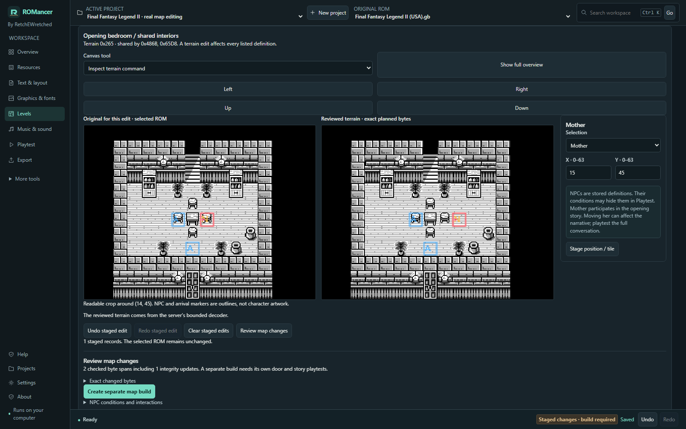
ADVANCED / Troubleshooting and support
Find the cause before repeating a change
Read the reported source, location and failed precondition. A useful next step reduces uncertainty instead of applying the same edit repeatedly.
Do this
- If the game did not change, check the selected source/build, Saved status and whether a build was created. Reload the new build in Playtest; an old session can still be running.
- If a definition or patch refuses, compare exact revision, byte scope and original bytes. For text, inspect controls/encoding/capacity. For graphics, inspect codec, bank and shared consumers.
- If playback or sound fails, check the selected system, engine setup, game focus and audio controls. GB and GBC need the right mode. Restore only compatible states and supported raw save data.
- Run project checks and Settings > Diagnostics & support. Review the sanitized preview, then download the report if you want to share it. No report is sent automatically.
Keep in mind. Do not erase originals, bypass identity checks or reinterpret unknown data just to clear an error. A passing later check should address the actual earlier failure.
Useful support detail
State the operation, application revision, selected system, expected result and actual result. Review any screenshot or log for personal information before sharing. Sanitized reports exclude ROM/save bytes, credentials, personal paths, project names and raw errors.
Recovery order
Keep unsaved text, back up the project, check the source identity, reproduce one small step, inspect the failure and restore or correct the narrow change. Historical reports are references; run fresh native checks for a current claim. For a room destination or mapped-address issue, inspect its checked definition and exact source bytes before treating the result as runtime behavior.
ADVANCED / LOCAL REFERENCES / READ-ONLY ANALYSIS
Use documented codes to find investigation leads
A documented code can narrow a search. Its published effect label is a claim to test, and its CPU address still needs a valid mapping to the selected ROM.
Do this
- In Resources, expand ROM health & revision, then Code reference catalog. Choose a local UTF-8 TXT, JSON, JSONL, CSV or TSV catalog and click Import code references. This replaces the project’s reference catalog; it does not edit the ROM.
- Choose Inspect matching references. Search an effect label or code and use Previous/Next for additional pages. Required + combinations and / revision alternatives remain distinct.
- Read the revision status. MATCHED compares supplied hashes with the root source; MISMATCH has no mapped locations. UNSPECIFIED usually means title-only selection. Even a hash match does not verify the effect label.
- Use Inspect beside a decoded location to open its bytes. Compare bytes can eliminate incompatible candidates, but a switchable-bank candidate does not establish the active bank. Do not turn an incomplete or truncated combination into a patch.
Keep in mind. Game Genie decoding covers NES, SNES, Genesis, GB and GBC only. GBA codes use other formats and are not decoded here. Hardware overlays, unknown mappers and unsupported codes remain unresolved. Keep the original local catalog for full provenance when a result is shortened.

Mixed extracts and duplicate references
A composite text file may include both publication and community sections. Explicit Game Genie and Action Replay labels stay separate. Unsupported Action Replay records remain reference data without decoded ROM locations. Duplicate publication/community entries retain their own provenance; the record count is not a count of unique, tested effects.
ADVANCED / AUTOMATIC SCAN / STRUCTURAL EVIDENCE
Inspect a shared engine without known game offsets
The GBA recognizer follows a supported THUMB instruction pattern and validates linked player, song-header and track-pointer structures. It does not look up a Wario Land 4 address.
Do this
- Let deep scan finish, or choose Rescan ROM. Expand Recognized data structures in the ROM investigation panel when a finding is available.
- Read the engine family, linked-record count and source reference. View Song table and the other location buttons open the actual file bytes used by this finding.
- Separate a recognized structure from editing support. This recognizer checks one straight-line M4A-compatible loader and a bounded table ending at its first referenced header. Other drivers, compiler variants or table placements can be missed.
- An ambiguous result selects no table. A work-budget result reports no complete finding. A no-match result does not prove that the engine is absent. Use a checked sample/sequence definition before editing music.
Keep in mind. Engine version, full sequence control flow, playback correctness, instruments and safe relocation are not certified. The current detector validates track bounds and a supported initial command, rather than interpreting every song. It does not create an editable commercial-game music definition.
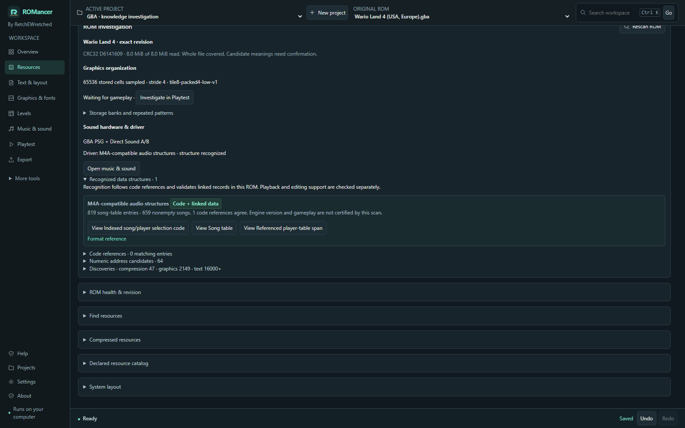
ADVANCED / HARDWARE HELP / SEPARATE ADDRESS DOMAINS
Understand an address before investigating it
A CPU address, file offset and video-memory offset can have the same number and refer to different things. Hardware help explains the region without pretending to know a game variable.
Do this
- Open More tools > Troubleshooting and expand Hardware & address help. A completed ROM scan supplies the CPU, byte-order convention, graphics layout and mapping notes for the selected system.
- Choose the address domain, enter a decimal or 0x hexadecimal value, and click Explain address. NES PPU, physical VRAM and SNES audio CPU domains are separate choices only where supported.
- Read the region and its conditions. A GB cartridge window may contain RTC registers; a SNES audio port is not audio RAM; Genesis sound RAM requires bus arbitration. Register descriptions never read or write the hardware.
- For a persistent ROM edit, use Address explorer with a checked mapping, including the physical bank and header offset. A core’s exposed-memory offset also needs an established mapping before treating it as a CPU address.
Keep in mind. To investigate a changing stat, reproduce one controlled change, narrow its RAM candidates, and establish the writer and immutable source in a debugger that exposes those events. ROMancer’s snapshots do not provide instruction breakpoints or prove causation. Unexecuted bytes and repeated FF/00 runs do not establish free space.
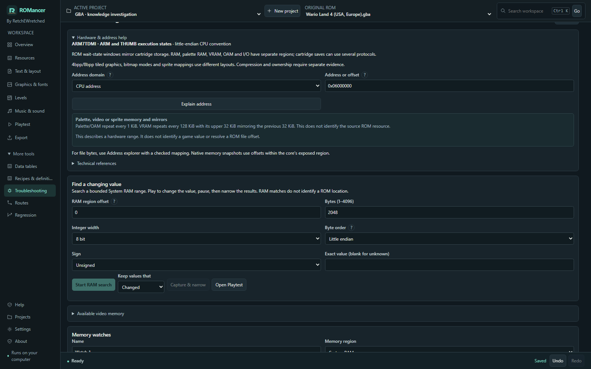
ADVANCED / DEEP SCAN / STATIC CHECKS
Read automatic cartridge verification
Deep scan now displays individual cartridge-health results, including supported startup addresses. These checks describe the stored image without executing its program.
Do this
- Let the automatic scan finish. Expand Cartridge verification in ROM investigation. Read Consistent, Needs attention, Mismatch and Not checked separately. A warning is not a proof of corruption.
- Inspect supported reset vectors or entry branches. CPU addresses and file locations remain different. Click a vector/header or target-byte button to examine its actual storage. An unresolved bank state does not receive a guessed target.
- For GB/GBC/GBA, read the documented header checks. Logo comparison uses fingerprints rather than distributed logo assets; GBA normalization changes only documented variable bits. Custom headers can intentionally differ.
- For ordinary LoROM/HiROM up to 4 MiB, checksum verification handles standard tail mirroring and an identified copier header. The size declaration uses the rounded-up payload size. Enhancement chips, extended maps and unresolved layouts remain outside this checksum rule.
Keep in mind. NES has no standard whole-cartridge checksum. A standard header logo and an in-bounds branch do not prove game identity, valid target instructions, authentic firmware, or successful gameplay. Instruction breakpoints and full code tracing require a debugger that exposes those events.

Size and analysis limits
The supported linear GBA cartridge format is limited to 32 MiB. An engine detector that reaches its own budget reports that limit separately; the other cartridge and resource checks remain available.
REFERENCE / A-Z
Glossary
- Address domain
- The coordinate system of an address, such as CPU bus, ROM file bytes, PPU memory or physical VRAM. Conversion needs an established mapping and sometimes runtime bank state.
- Allocation
- The confirmed storage extent available to a resource. A larger encoded result must not overwrite neighboring data.
- Arrival record
- A game-specific destination record, often containing a room reference, coordinates and packed flags. It is distinct from the trigger that selects it.
- Artifact
- A project-owned source, build or prepared output identified by its own content and role.
- Assertion
- An explicit expected observation used by a route or check. A test cannot infer the correct gameplay outcome for you.
- Bank
- A selected storage window in a bank-switched system. Translating a CPU address may require an explicit bank.
- Baseline
- The original or reference run against which a build is compared. It must pass the intended assertions before comparison.
- Battery save
- Persistent game progress exposed as save RAM. Raw .sav/.srm data is different from an emulator save state.
- BPS
- A patch format with source, target and patch checksums. ROMancer independently reconstructs the target during patch verification.
- Build
- A separate playable output created by applying a reviewed plan. Saving an editor draft does not create a build.
- Byte
- Eight bits of stored data. Two hexadecimal digits represent a byte; its meaning depends on its format and location.
- Byte order
- The order of bytes in a multi-byte value. Little endian stores the least significant byte first; big endian stores it last.
- Candidate
- A possible resource or structural match that requires confirmation. Plausible text or pixels are not proof of game semantics.
- Code reference
- An imported code and published effect label used as an investigation lead. Decoding an address and value does not independently verify the label or activate a cheat.
- Codec
- The rule for decoding or encoding stored graphics, samples or compressed data. A codec does not locate a resource.
- Collision
- Data or game behavior controlling movement and contact. Visual terrain does not by itself establish collision semantics.
- Compare byte
- An original byte encoded by some replacement codes. It can reject incompatible candidate locations but cannot by itself establish the active bank or prove the effect.
- Console checksum
- A system-specific integrity field stored in some ROMs. It differs from a measured whole-file CRC32 or SHA-256 identity.
- Control code
- A declared non-text command embedded in a text record, such as a wait, color change or terminator. Protected controls must be preserved.
- Core / engine
- The local emulator component used by Playtest. Its build, options and system-file setup affect state compatibility.
- CRC32
- A measured checksum to compare with a known expected value for the same byte scope. Without a reference, revision status stays unknown.
- CSV / TSV
- Delimited text formats used for translation sheets and catalogs. Preserve stable IDs, quoting, columns and the selected delimiter.
- Declared connection
- An explicit mapping from one stored exit-field value to a declared room ID. It supports editor navigation; it does not prove a game executes a door transition.
- Declared definition
- An explicitly supplied description of storage, fields, mappings and limits. It is not automatically independent proof of game meaning. Names and editor relationships remain declarations until their runtime consumers are established.
- Destination ownership
- Evidence that a destination allocation belongs to the resource being moved and can be written without overwriting other data. A repeated fill pattern is not that evidence.
- Draft
- Saved editor inputs and staged work. A draft can be reopened, but it is not a playable modified ROM.
- Encoding
- The mapping between stored values and characters or commands. Encoded byte length can differ from character count.
- Evidence
- A measured observation bound to its content and setup. Its conclusion is limited to the checks actually performed.
- Field
- A named value at a declared relative position in a record. Its type, byte order and range determine its supported storage.
- Frame
- A video update or explicitly assembled animation view. A preview frame and a measured native game frame have different origins.
- Glyph
- A stored shape used to display a character. A shared glyph edit can affect every string that uses it.
- Hexadecimal
- Base-16 notation using 0-9 and A-F. The prefix 0x marks a hexadecimal number.
- IPS
- A patch format that requires an external exact-source reference. ROMancer asks for the author's full-file CRC32 or SHA-256.
- Known / verified
- Information supported by the recorded verification for a stated scope. A revision match is not exhaustive gameplay verification.
- Layer
- A selectable view or declared editing plane. Terrain, raw collision values and object slots describe different information; hiding a visual overlay does not establish new game semantics.
- Mapping
- A declared relationship between file offsets and system addresses. Bank-switched or special hardware needs additional information.
- MCP
- The optional structured tool interface for compatible AI clients. ROMancer starts read-only unless writes are explicitly enabled.
- Metatile
- A block made from several tiles. Many room cells can reference one block, so changing its parts can affect many uses.
- Mirrored checksum
- A checksum calculated with a documented repetition of the tail of a non-power-of-two image. The checksum convention does not by itself establish cartridge mapping or game compatibility.
- Object metadata
- Optional per-slot index, name, role and declared reference annotations. Metadata does not replace the checked record layout or establish actor/event behavior.
- Offset
- A zero-based byte position in a file. It is distinct from an address in a console memory map.
- Original / source
- The source identity imported into the project. ROMancer works with owned copies and creates separate edited outputs.
- Palette
- A set of colors addressed by pixel indices. Banks and shared entries can affect several sprites, backgrounds or scenes.
- Patch
- A file describing changes from an original to a target build. Compatibility depends on the exact expected source bytes.
- Plan
- A source-bound list of proposed changes with original-byte preconditions and any required integrity updates.
- Pointer
- A stored value interpreted through a declared mapping. A linear pointer base does not establish a bank-switched CPU address. Relocation also needs the complete set of affected pointer obligations and representable destination values.
- Preferences
- Saved application choices for appearance, startup, automatic analysis and audio. Apply or OK persists them; a theme or volume change does not edit ROM data.
- Record
- One entry in a declared table or script. A row ID is not automatically a known in-game item or character name.
- Regression
- An unintended change detected by a defined test. A successful route covers its assertions, not the entire game.
- Reset vector
- A stored address used to enter startup code after reset. Its address domain and cartridge mapping determine which file bytes it can reference; checking the vector does not execute that code.
- Revision
- An exact version or byte identity of a source. A matching title or filename does not establish the revision.
- Route
- A recorded or declared sequence of inputs and assertions for a particular native setup and starting condition.
- Save state
- An emulator snapshot tied to exact ROM, engine and setup identities. It is different from persistent battery save data.
- Scope
- The exact bytes, scene, route or format a claim covers. Whole-file and cartridge-payload hashes use different scopes.
- SHA-256
- An exact content identity used to bind sources, plans, builds and evidence to the bytes they concern.
- Sound driver
- Game-specific code that interprets music and sound data. Knowing the console hardware does not identify its command grammar.
- Stride
- The number of bytes from one table record to the next. Each field has its own offset within a record.
- Theme
- The application color treatment. ROMancer is the default; Dark uses neutral graphite and Light uses a readable white surface. Themes do not modify the game palette.
- Tile
- A small stored graphics cell decoded with a specific codec. Several tiles can form a sprite, glyph or background.
- Tilemap
- A grid of references to tiles, sometimes including palette banks or flip bits. Its storage format must be established.
REFERENCE / FIND A TOPIC
Alphabetical index
Links open the relevant topic. Page numbers refer to the bundled PDF edition.
- Address domainsUnderstand an address before investigating it (PDF 53) | Inspect memory and translate addresses (PDF 41)
- Address translationInspect memory and translate addresses (PDF 41) | Inspect bytes with useful context (PDF 23)
- Advanced synthetic layout practiceAdvanced practice: objects and room connections (PDF 36)
- Advanced tools visibilitySet preferences and choose a theme (PDF 6)
- AI clientsUse AI and MCP with explicit permissions (PDF 43)
- AllocationsExtract and reinsert supported compression (PDF 39) | Declare text, fonts and layout limits (PDF 34)
- Animation framesPreview an explicitly assembled animation (PDF 29)
- Apply, OK and CancelSet preferences and choose a theme (PDF 6)
- Arrival recordsBrowse real FFL2 maps and edit supported records (PDF 46)
- AssertionsRecord routes and compare builds (PDF 40)
- Audio CPU address spaceUnderstand an address before investigating it (PDF 53) | Preview sound and respect driver limits (PDF 38)
- Audio previewPreview sound and respect driver limits (PDF 38) | Playtest, pause and save a state (PDF 16)
- Auto deep scan on ROM loadSet preferences and choose a theme (PDF 6) | Discover resources and declare a format (PDF 26)
- Automatic graphics analysisSet preferences and choose a theme (PDF 6) | Discover resources and declare a format (PDF 26)
- Backups and restoreBack up, restore and recover a project (PDF 19) | Keep battery saves and states separate (PDF 17)
- Banks and byte orderInspect memory and translate addresses (PDF 41) | Discover resources and declare a format (PDF 26)
- Baseline checksRecord routes and compare builds (PDF 40)
- Batch table editsRebalance named equipment and enemy stats (PDF 31) | Reuse checked recipes and definitions (PDF 42)
- Battery savesKeep battery saves and states separate (PDF 17)
- BPS patchesExport a verified patch (PDF 18)
- Build historySave drafts, undo and create a build (PDF 10)
- Byte explanationsTrace a declared range to the exact bytes (PDF 24) | Inspect bytes with useful context (PDF 23)
- Candidate discoveriesDiscover resources and declare a format (PDF 26)
- Capacity and overflowTranslate through CSV or TSV (PDF 33) | Extract and reinsert supported compression (PDF 39)
- Changed, added and removed bytesLoad a mod and compare the changed bytes (PDF 21)
- ChecksumsIdentify the ROM and its exact revision (PDF 9)
- CollisionEdit declared terrain, objects and collision (PDF 35)
- Collision values and layersMove a documented room object (PDF 14) | Edit declared terrain, objects and collision (PDF 35)
- Color pickerEdit stored palette entries deliberately (PDF 28)
- Compare bytesUse documented codes to find investigation leads (PDF 49) | Inspect memory and translate addresses (PDF 41)
- Compare original and modded ROMsLoad a mod and compare the changed bytes (PDF 21)
- CompressionExtract and reinsert supported compression (PDF 39)
- Connected roomsAdvanced practice: objects and room connections (PDF 36)
- Console system modesDiscover resources and declare a format (PDF 26) | Playtest, pause and save a state (PDF 16)
- Control codesDeclare text, fonts and layout limits (PDF 34)
- Controller inputPlaytest, pause and save a state (PDF 16) | Learn a little at a time (PDF 20)
- CRC32Identify the ROM and its exact revision (PDF 9)
- CSV and TSVTranslate through CSV or TSV (PDF 33) | Identify the ROM and its exact revision (PDF 9)
- Dark and Light themesSet preferences and choose a theme (PDF 6) | Set preferences and choose a theme / examples (PDF 7)
- Data tablesRebalance named equipment and enemy stats (PDF 31)
- Declared connectionsAdvanced practice: objects and room connections (PDF 36) | Trace a declared range to the exact bytes (PDF 24)
- Decoded room terrainMove a documented room object (PDF 14) | Edit declared terrain, objects and collision (PDF 35)
- DefinitionsDiscover resources and declare a format (PDF 26) | Reuse checked recipes and definitions (PDF 42) | Advanced practice: objects and room connections (PDF 36)
- Delete and TrashBack up, restore and recover a project (PDF 19)
- Destination ownershipExtract and reinsert supported compression (PDF 39)
- Destination room pickerAdvanced practice: objects and room connections (PDF 36)
- DiagnosticsFind the cause before repeating a change (PDF 48)
- Draft savingSave drafts, undo and create a build (PDF 10)
- EncodingTranslate through CSV or TSV (PDF 33) | Declare text, fonts and layout limits (PDF 34)
- EnginesInstall, open and choose a workspace (PDF 5) | Playtest, pause and save a state (PDF 16)
- Evidence and limitsIdentify the ROM and its exact revision (PDF 9) | Record routes and compare builds (PDF 40)
- ExportsExport a verified patch (PDF 18)
- FFL2 real map catalogBrowse real FFL2 maps and edit supported records (PDF 46)
- File offsetsInspect bytes with useful context (PDF 23) | Trace a declared range to the exact bytes (PDF 24)
- Fonts and glyphsDeclare text, fonts and layout limits (PDF 34)
- Game Boy Color modeEdit a Game Boy Color palette (PDF 15) | Discover resources and declare a format (PDF 26)
- Game Genie referencesUse documented codes to find investigation leads (PDF 49)
- Game-specific editsMake a small balance change (PDF 11) | Move a documented room object (PDF 14)
- Graphics discoveryDiscover resources and declare a format (PDF 26)
- Header-logo fingerprintsRead automatic cartridge verification (PDF 55)
- Hex search and bookmarksInspect bytes with useful context (PDF 23)
- Hillside and Courtyard Advanced practiceAdvanced practice: objects and room connections (PDF 36) | Edit declared terrain, objects and collision (PDF 35)
- Import ROMStart with a project (PDF 8)
- Installation and portable ZIPInstall, open and choose a workspace (PDF 5)
- Interface size and 100%Set preferences and choose a theme (PDF 6)
- IPS patchesExport a verified patch (PDF 18)
- Keyboard shortcutsLearn a little at a time (PDF 20)
- Known versus unknownIdentify the ROM and its exact revision (PDF 9) | Discover resources and declare a format (PDF 26)
- Layers and gridMove a documented room object (PDF 14) | Edit declared terrain, objects and collision (PDF 35)
- Layouts and pointersDeclare text, fonts and layout limits (PDF 34) | Inspect memory and translate addresses (PDF 41)
- Level editingEdit declared terrain, objects and collision (PDF 35)
- Levels and sound definition exchangeReuse checked recipes and definitions (PDF 42)
- MCP permissionsUse AI and MCP with explicit permissions (PDF 43) | Reuse checked recipes and definitions (PDF 42)
- Memory watchesInspect memory and translate addresses (PDF 41)
- Metatile brush thumbnailsEdit declared terrain, objects and collision (PDF 35)
- MetatilesEdit declared terrain, objects and collision (PDF 35)
- Music driversPreview sound and respect driver limits (PDF 38)
- Named editsMake a small balance change (PDF 11) | Change text without overrunning it (PDF 12)
- Named equipment and enemiesRebalance named equipment and enemy stats (PDF 31)
- Named object inspectorAdvanced practice: objects and room connections (PDF 36)
- Non-power-of-two SNES checksumsRead automatic cartridge verification (PDF 55)
- Object metadata and rolesAdvanced practice: objects and room connections (PDF 36)
- Original and edited previewsPaint an assembled sprite (PDF 27) | Edit stored palette entries deliberately (PDF 28)
- Original and edited waveformsPreview sound and respect driver limits (PDF 38)
- Palette banksEdit stored palette entries deliberately (PDF 28)
- Patch applicationExport a verified patch (PDF 18)
- Pixel paintingPaint an assembled sprite (PDF 27)
- PNG importPaint a declared tilemap (PDF 30)
- PreferencesSet preferences and choose a theme (PDF 6) | Set preferences and choose a theme / examples (PDF 7)
- Preview looping and muteSet preferences and choose a theme (PDF 6) | Preview sound and respect driver limits (PDF 38)
- Private project dataBack up, restore and recover a project (PDF 19) | Use AI and MCP with explicit permissions (PDF 43)
- Progression coverageRecord routes and compare builds (PDF 40)
- Project checksIdentify the ROM and its exact revision (PDF 9)
- Public format referencesUse public knowledge without confusing it with proof (PDF 44)
- RAM to ROM investigationUnderstand an address before investigating it (PDF 53) | Trace a declared range to the exact bytes (PDF 24)
- RAM value searchInspect memory and translate addresses (PDF 41)
- RecipesReuse checked recipes and definitions (PDF 42)
- Reduced motionSet preferences and choose a theme (PDF 6)
- Regression suitesRecord routes and compare builds (PDF 40)
- Relocation prerequisitesExtract and reinsert supported compression (PDF 39)
- Remember last workspaceSet preferences and choose a theme (PDF 6)
- Restore defaultsSet preferences and choose a theme (PDF 6)
- Revision catalogsIdentify the ROM and its exact revision (PDF 9)
- Rollback and updatesInstall, open and choose a workspace (PDF 5)
- Room objectsMove a documented room object (PDF 14) | Advanced practice: objects and room connections (PDF 36)
- Save statesPlaytest, pause and save a state (PDF 16) | Keep battery saves and states separate (PDF 17)
- Screenshot checkpointsRecord routes and compare builds (PDF 40)
- SettingsSet preferences and choose a theme (PDF 6)
- SHA-256Identify the ROM and its exact revision (PDF 9)
- Shared engine recognitionInspect a shared engine without known game offsets (PDF 51) | Preview sound and respect driver limits (PDF 38)
- Shared resourcesBrowse real FFL2 maps and edit supported records (PDF 46) | Edit stored palette entries deliberately (PDF 28)
- Shared tilesPreview an explicitly assembled animation (PDF 29) | Paint a declared tilemap (PDF 30)
- Sound samples and WAVPreview sound and respect driver limits (PDF 38)
- Source-bound navigationTrace a declared range to the exact bytes (PDF 24) | Inspect memory and translate addresses (PDF 41)
- Sprite assemblyPaint an assembled sprite (PDF 27)
- Startup vectors and branchesRead automatic cartridge verification (PDF 55)
- Table fields and strideRebalance named equipment and enemy stats (PDF 31) | Inspect memory and translate addresses (PDF 41)
- Terrain and collisionEdit declared terrain, objects and collision (PDF 35)
- Text and translationChange text without overrunning it (PDF 12) | Translate through CSV or TSV (PDF 33)
- ThemesSet preferences and choose a theme (PDF 6) | Set preferences and choose a theme / examples (PDF 7)
- TilemapsPaint a declared tilemap (PDF 30)
- TroubleshootingFind the cause before repeating a change (PDF 48)
- Undo and RedoSave drafts, undo and create a build (PDF 10) | Paint an assembled sprite (PDF 27)
- VolumeSet preferences and choose a theme (PDF 6) | Playtest, pause and save a state (PDF 16)